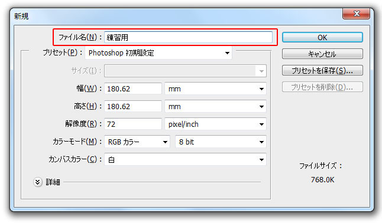

第2章 設定と基本操作
第2節 書類設定と環境設定
本節では、フォトショップで作業する上で覚えておかなければならない設定項目について、
実際に新規ファイルを作成しながら紹介します。
第1項 新規ファイルの書類設定と保存
この項で学習する内容
- [新規ファイル]作成の流れとともに、各設定項目について理解する。
設定の流れ
すでに保存された写真や画像を開く場合と違い、
新たに画像を作成する場合は3つのポイントを設定します。
- 単位とサイズの設定
フォトショップで作業をしていく上で使用するサイズの「単位」を設定します。
- 画像解像度の設定
印刷用素材として高画質で作成するか、WEBサイト用素材として低画質で作成するかを設定します。
- カラーモードの設定
印刷用のカラーモードで作成するか、WEBサイト用のカラーモードで作成するのかを設定します。
新規ファイルを作成しましょう
新規ファイルの設定画面を開いてみましょう。
[ファイル]メニューから[新規]を選択してください。新規ウィンドウが表示されます。
ここでは[ファイル名]の欄に「練習用」と名前を入力してください。

ワンポイント
ファイル名は保存の際に、設定し直すことができます。
ここでファイル名を指定しなくても特に問題はありません。
引き続き設定を続けます。
この画面は閉じずに次の項へ進んでください。